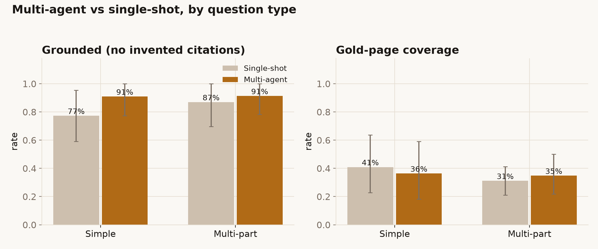

The problem
A single-shot Q&A bot (like its sibling QuoteGuard) does one retrieval and writes one answer. That works for one fact. Real policy questions are rarely one fact: "Is flood covered, and if a storm hits in the same event, how many excesses apply?" is three questions wearing a trench coat. Ask a single pass and it usually answers the loudest part and skims the rest, sometimes asserting something the document never says.
The interesting question is whether handing the job to a small team of specialised agents (one to plan, several to research, one to check the work) produces a better-grounded answer than one model doing it all at once, or whether it just adds moving parts and cost for the same result.
What I built
PolicyDesk is a research desk built on LangGraph. Given a question about the Allianz Business PDS, it runs a small org chart:
- A planner splits the question into the minimal set of sub-questions.
- A researcher is spun up for each sub-question (in parallel) to retrieve evidence and draft a page-cited answer.
- A critic reads every draft against its cited evidence and sends weak ones back for revision — a loop, capped so it can't spin forever.
- An editor merges the verified findings into one cited brief; guardrails sit on the way in and out.
It reuses QuoteGuard's corpus and BM25 retrieval on purpose, so I could measure the multi-agent desk head-to-head against plain single-shot RAG: same model, same retriever, with only the orchestration changing.
Does multi-agent actually win?
It depends what you mean by win. Two patterns hold up across 45 questions. The desk is more reliably grounded: 91% of its answers cite a real, retrieved page, against 82% for a single pass, and the gap is widest on simple lookups (91% vs 77%). But it is no more complete: gold-page coverage is a dead heat (36% vs 36%). So the team of agents earns its keep on citation discipline, not on finding more of the answer — at least at this model size.

See the full comparison →A lesson in sample size
An early 15-question pilot showed a dramatic split: +26 points of coverage for the desk on multi-part questions, −25 on simple ones. Tripling the eval to 45, that swing washed out — it was small-sample noise. The grounding edge survived; the coverage swing did not. A working reminder to trust a result only at a credible sample size (its sibling QuoteGuard taught me the same lesson with a retrieval metric).
Does the critic earn its keep?
A little. The critic catches drafts that cite nothing or cite a page they never read, and bounces them back; across the eval that nudges the share of grounded sub-answers from 74% to 79%. Most of the protection comes from a cheap deterministic check that blocks fabricated citations before the LLM critic even runs. The model-based revision adds a few points on top, not a transformation.
How the graph and the critic loop work →Multi-agent here buys reliability, not completeness, at roughly seven times the cost. The practical answer is to route by complexity: a built-in classifier sends simple questions to a single pass and keeps the desk for compound ones, holding the grounding edge while cutting the cost by ~40%. Watch the desk run →